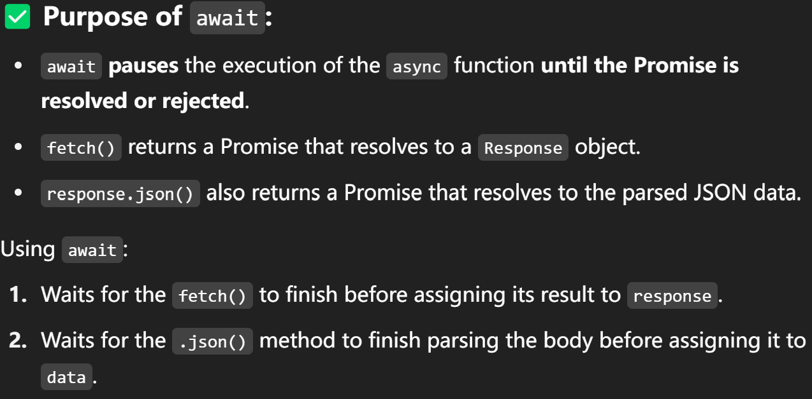
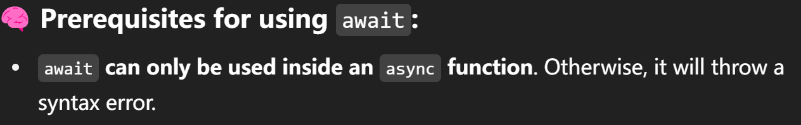
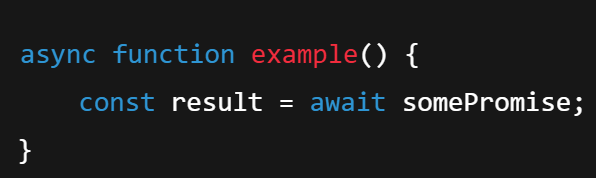
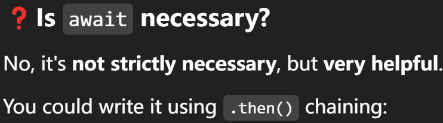
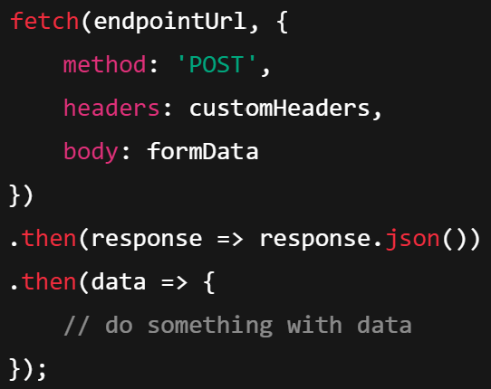
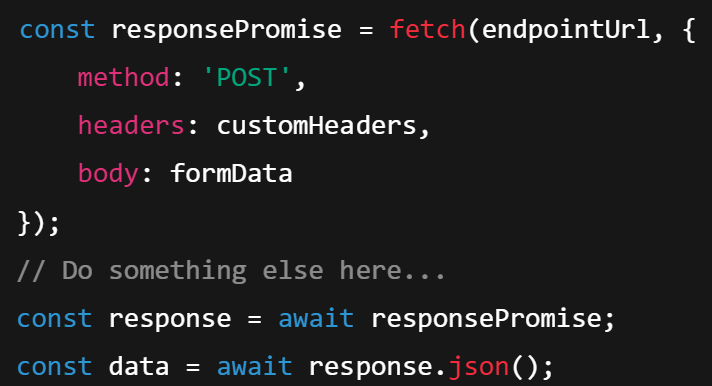
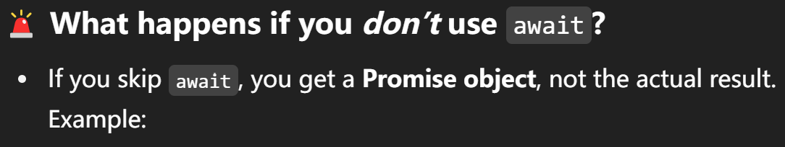
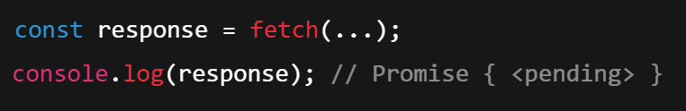
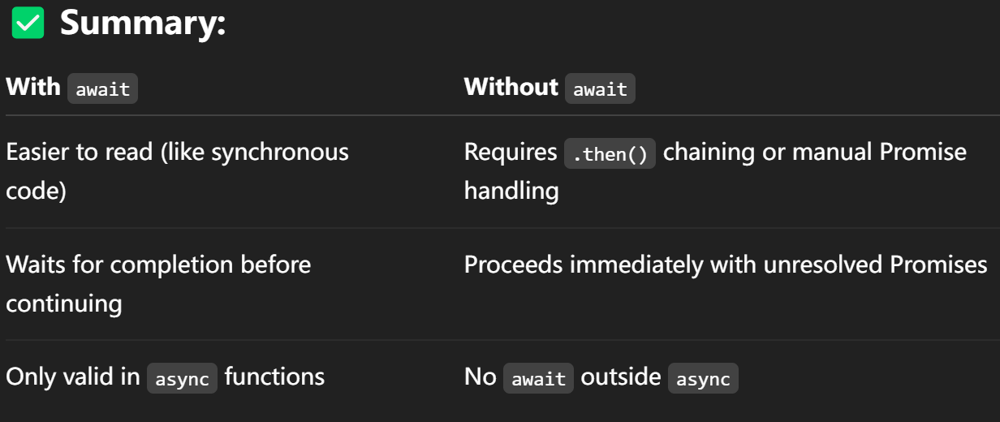

GenAI Use
Here are GenAI supports I have requested for web page establishment.
Examples are shown below reflecting how Generative AI has enhanced the development of this webpage through three key applications: drafting stylished components, generating code explanations, and creating images.
In this part, I am going to prompt generative AI to generate css code styling a table, where I can display my value mapping.
My Prompt:
Design a responsive HTML table based on CSS that adapts elegantly to small screens.
On desktop, it should be a traditional 3-column layout with alternating row colors, clear borders, and a soft box shadow.
On mobile (below 768px), hide the table headers and display each row as a card with full-width blocks, soft corner radius, and subtle shadow. Each cell should show a label with the column name. Ensure accessible font sizes, consistent padding, and remove any unwanted spacing or borders at the bottom of the last item. (Responsive Design)
The Table Responded by AI:
| Name | Role | Location |
|---|---|---|
| Alice Smith | Designer | New York |
| Bob Johnson | Developer | London |
| Clara Lee | Manager | Toronto |
Comment:
It generally achieves the goal, but some details like color variables and size should be updated by providing additonal requirements.
Here an example is provided to show how to use generative AI to explain a code snippet.
My Prompt:
In the following code:
const response = await fetch(endpointUrl, {
method: 'POST',
headers: customHeaders,
body: formData
});
const data = await response.json();
What is the purpose of using await here, and what are the prerequisites for using it? Is it necessary to use this keyword? What would happen if I don't use await?
AI Response:
        Comment:
The AI response is quite comprehensive and detailed. It explains the purpose of using "await" in the context of asynchronous programming, the prerequisit es for using it, and the consequences of not using it. It also provides a clear understanding of how "async/await" works in JavaScript.
Imagery is a powerful tool for conveying information and evoking emotions. Generative AI can assist in creating images that align with the content and purpose of a webpage.
My Prompt:
Please generate an image according to information below:
Core Expression: Viscral Design
Theme: Intuitive, sensory-impacting beauty that inspires instinctive emotions.
Image: a crystal clear deep blue ocean with a suspended droplet in the center reflecting a rainbow halo; the background is a soft gradient twilight with subtle starlight.
Details: an abstract eye is reflected in the droplet, symbolizing “intuition”; flowing golden lines around the droplet enhance the dynamic aesthetic.
Keywords: ethereal, liquid elegance, vibrant colors, organic shapes, surreal, glowing light, high detail, 4K
AI Response:

Comment:
The generated image is visually stunning and aligns well with the theme of visceral design. The use of vibrant colors, organic shapes, and ethereal elements effectively conveys the concept of intuitive beauty. The result is satisfying and captures the essence of the prompt.